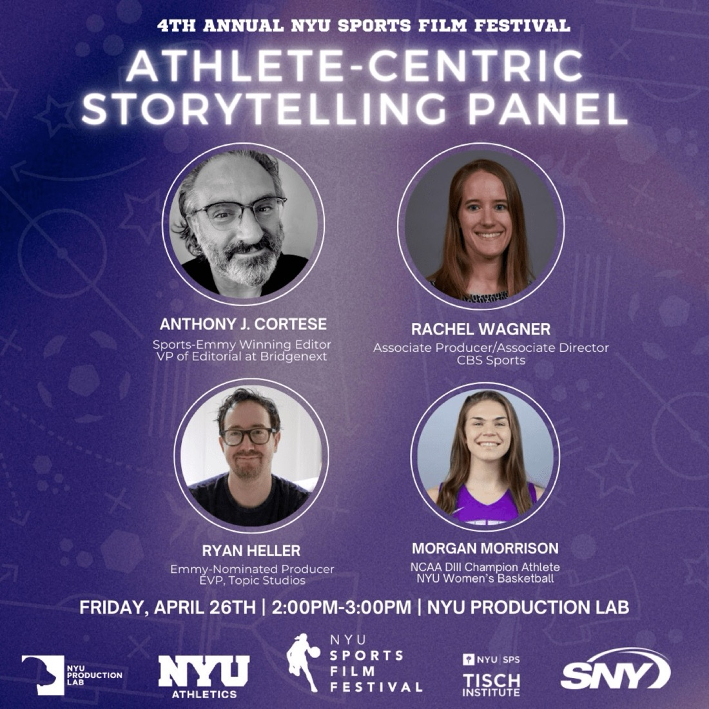
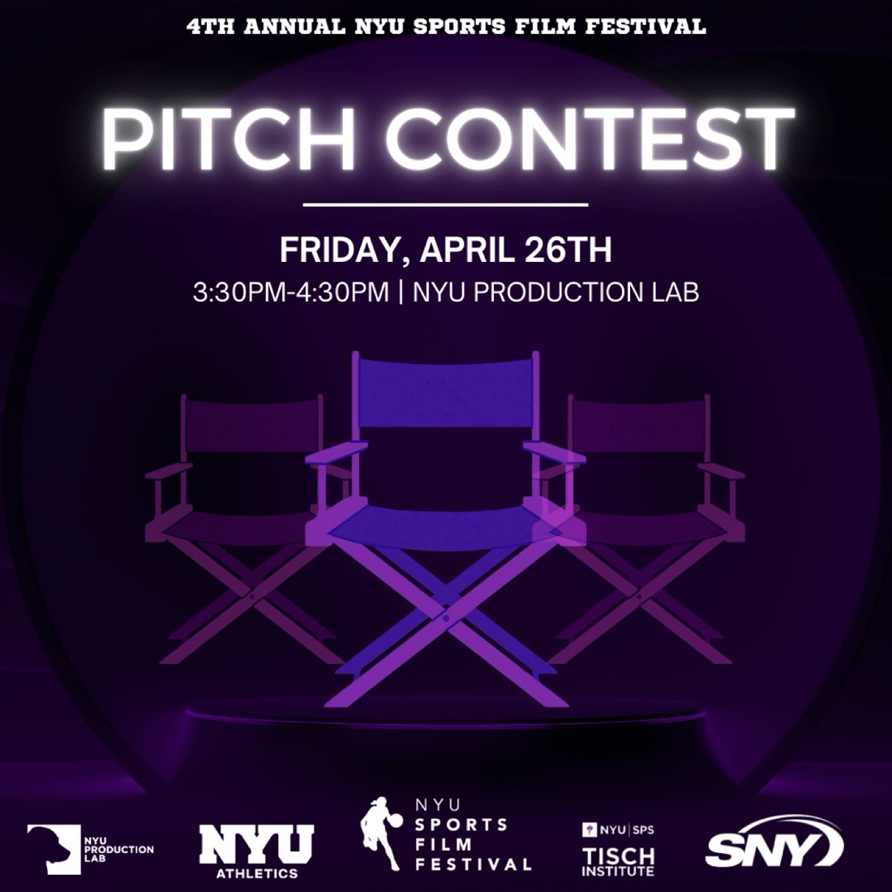
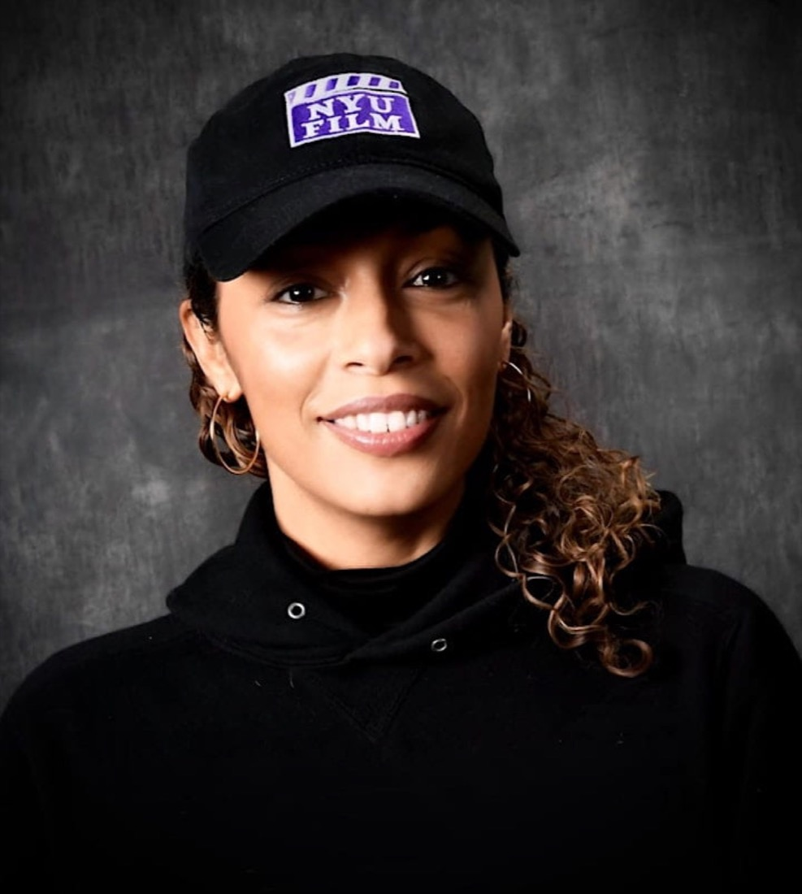
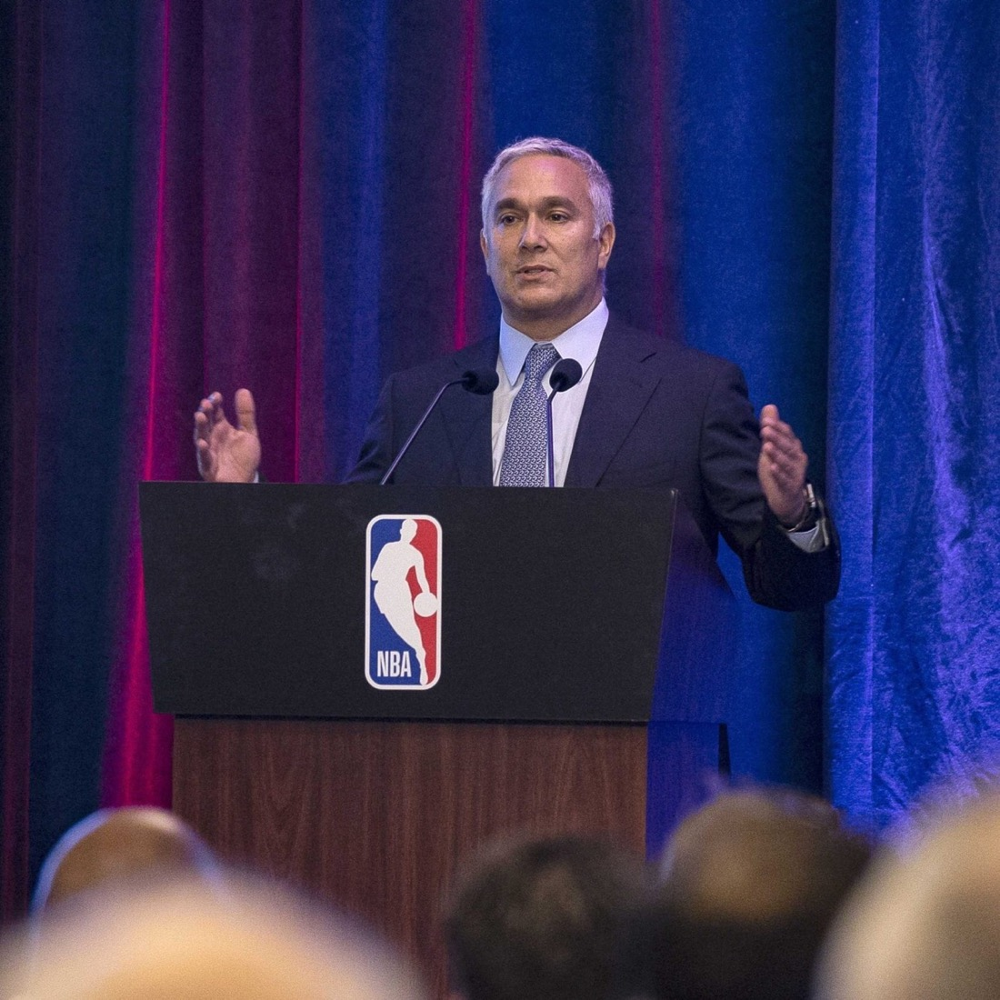
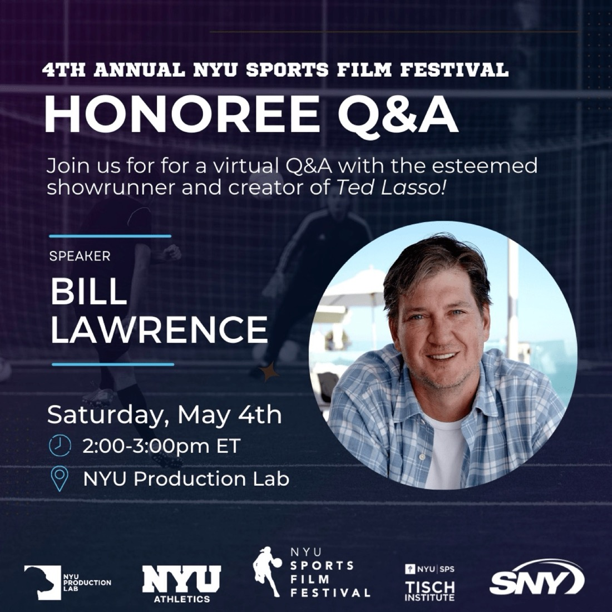

Go Dani Go
Directed by Chelsea Patricia Ramirez
A spunky girl helping her mother in the fields must choose between putting soccer or family first.
April 26–27 & May 4, 2024 · Angelika Film Center & NYU Production Lab
The 4th Annual festival screened 19 official selections at the Angelika Film Center, debuted the NYUSFF Pitch Contest, and welcomed Ted Lasso creator Bill Lawrence as honoree.

In 2024, the festival featured 19 official selections and 5 honorable mentions chosen from 150 submissions from 18 countries. At the Angelika Film Center, filmmakers from around the world spoke to a packed theater before their films.
Back at the NYU Production Lab, the Athlete-Centric Storytelling panel brought together a Sports Emmy-winning editor, a CBS Sports producer, a Topic Studios executive, and an NCAA champion. It was also the debut year of the NYUSFF Pitch Contest, judged by producers from Madison Square Garden Sports, SaChin Productions, Black Lion TV, and Point Road Productions.
On the second weekend, NYUSFF welcomed Bill Lawrence for an honoree Q&A and screened student films from NYU’s first-ever Sports Documentary Course. 2024 also saw the launch of the Athletics Film Workshops with NYU Athletics.


Filmmakers on the step-and-repeat in 2024

A screening at the Angelika Film Center
Directed by Chelsea Patricia Ramirez
A spunky girl helping her mother in the fields must choose between putting soccer or family first.
Directed by Tommaso Magnano · Italy
Italian brothers fulfill their Bonneville dreams.
Directed by Matthew Tan
A day in the lives of two boxers in Havana — 7-year-old Daniel, who dreams of becoming a national star, and 45-year-old former champion Evelio, who now works multiple jobs to get by.
Directed by Ziyi Xu
Two young Indigenous women challenge sexism and adulthood as they navigate the world of bull riding on the Navajo Nation reservation.
Directed by Mary Hawkins
Two friends, Fifi Fleshwound and Little Mary Switchblade, look back on their roller derby years in this animated short.
Directed by Prabhat Seelamsetti
A documentary about the NYU women’s basketball team on its way to the NCAA Division III championship.
Directed by Diane Russo Cheng
An intimate look at the nonprofit Skate Like A Girl through the eyes of Alexa, a trans woman skateboarder and mentor.
Directed by Cole Johnson
A child with sensory processing sensitivity attempts to overcome the chaos of the New York City streets.
Directed by Christa Haley
A high school swimmer struggles with her tampon before practice.
Directed by Camille Tricaud & Franziska Unger · France
Two ski jumpers reunite for the first time since their separation, rehearsing, posing, and answering questions for a film crew in the Alps.
Directed by Parker V Sack
An MMA fighter puts her body through hell to lose 15 pounds in a week.
Directed by Sai Selvarajan
A layered documentary in which the basketball court becomes a safe space for queer and trans BIPOC players to play, feel seen, and heal in community.
Directed by King Lu
Three teenagers weaponize their race and gender to hustle people at basketball in LA — until the gamesmanship gets too real.
Directed by Blake Horn
University of Michigan soccer star Michael Leon returns to Accra, Ghana, to give 100 uniforms to the youth team that ignited his passion.
Directed by Margarida Duque de Castela
Brazilian jiu-jitsu artist Angel Adorno shares the victories and challenges of being blind in a sighted world, in a film designed for blind audiences.
Directed by Kansas Ballesteros
A college swimmer must manage her trauma while continuing to train.
Directed by Pranay Sanwal
The story of an Iranian rug dealer on Fifth Avenue whose prolific wrestling career is hidden beneath a veil of humility.
Directed by Morteza Shahbazi
Village teenagers preparing for a football match are forced to play with a newcomer obsessed with goalkeeping and Italian keeper Buffon.
Directed by Daniela Magnani Hüller · Germany
Racing drivers Laura Kraihamer and Claudia Hürtgen defy the odds in the male-dominated world of motorsport.
Directed by Giran Findlay · Canada
A week in the life of a teenage tennis player balancing practice and home life as an important tournament approaches.
Directed by James Donnelly & Liam Richards · United Kingdom
A former gymnast returns to the sport at 40 to compete at the 2023 British Championships — in women’s artistic styles.
Directed by Betsy Schultz
Follows the NYU Women’s Soccer team on its journey to the NCAA tournament in Fall 2023.
Directed by Christopher Kosakowski
When an incident occurs mid-race, a top cross country runner must make an impossible decision.
Directed by Matthew Warter
World-class big wave surfer Alex Gray takes on a challenge bigger than the waves he surfs.

Friday, April 26 · 2:00–3:00pm · NYU Production Lab
The 2024 festival kicked off with a panel on media centered around the dramatic, unpredictable journeys of athletes, moderated by Festival Head of Media Bennett Garcia.
EVP, Film & Documentary, Topic Studios
Oversees Topic’s film and documentary slate, including the Emmy-winning HBO series 100 Foot Wave.
VP of Editorial, Bridgenext
A 13-time Emmy winner who edited the Showtime documentary A Game of Honor and has cut opens for seven Super Bowls.
Producer & Associate Director, CBS Sports
A Sports Emmy winner who produces for The NFL Today and has worked multiple Super Bowls, the Masters, and the Final Four.
NCAA DIII Champion, NYU Women’s Basketball
The 2023 WBCA D3 National Player of the Year, who won an undefeated national title at NYU and is the subject of A Violet Blooms.

Friday, April 26 · 3:30–4:30pm · NYU Production Lab
NYUSFF’s inaugural Pitch Contest featured presentations from five selected filmmakers, who received real-time feedback from the judges.

Director & Creative Producer, Black Lion TV
Emmy-winning director and NYU Tisch alum who began her career on The Cosby Show and at MTV Sports.

Executive Producer, Madison Square Garden Sports
Leads content for the Knicks and Rangers after a long tenure as President and EP of Global Content at NBA Entertainment.
Co-Founder, SaChin Productions
A 3-time Emmy winner who spent 21 years at CBS Sports, most recently as coordinating producer of The NFL Today.
Founder, Point Road Productions
Co-founded Point Road with NBA legend Grant Hill and directed The Maestro: Rollie Massimino Story for Fox Sports.

Saturday, May 4 · 2:00–3:00pm · Virtual Q&A at the NYU Production Lab
The award-winning writer, producer, and director behind Scrubs, co-creator of the two-time Emmy-winning Ted Lasso, and creator of Shrinking with Jason Segel and Harrison Ford. NYUSFF honored him with a moderated virtual Q&A, with time for questions from attendees.
Festival films, event highlights, and filmmaker and guest interviews were featured in the 4th Annual NYUSFF television special on SNY.